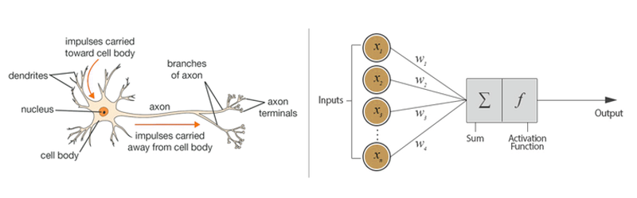
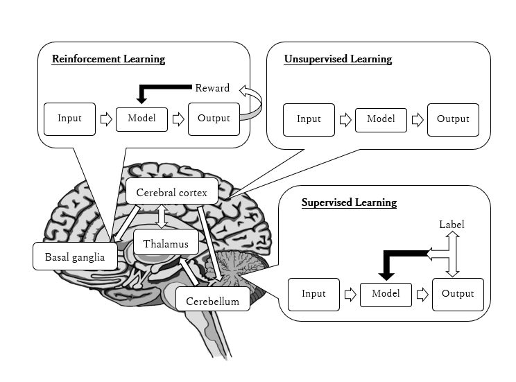
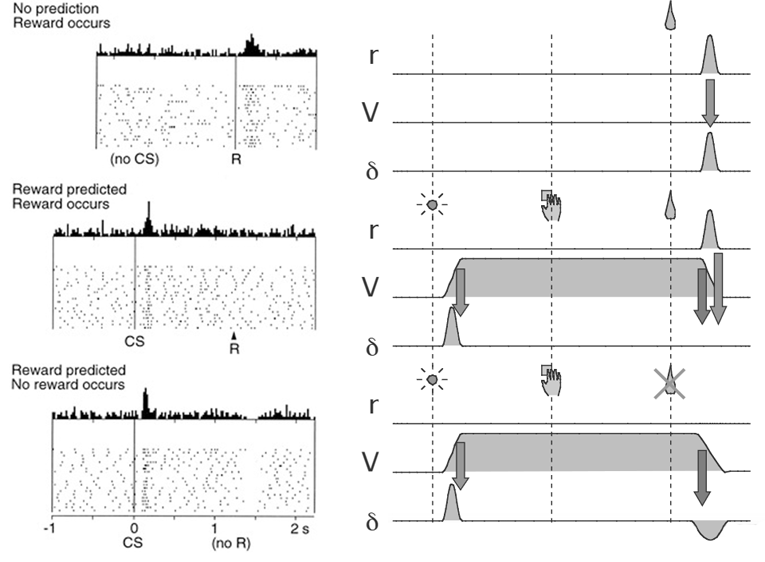

Introduction¶
Biological Neuron and Artificial Neuron¶
Neural networks are a set of algorithms, modeled loosely after the human brain, that are designed to recognize patterns [1]. The perceptron is a mathematical model of a biological neuron.

Fig.1: Biological neuron versus artificial neuron (perceptron).
Learning in Brain and Neural Network¶
Animals, including humans, change their behavior through experience. It is said that the brain has three types of leaning system: supervised learning, reinforcement learning, and unsupervised leaning.

Fig.2: Learning scheme in the brain.
Supervised Learning¶
Supervised Learning is a machine learning technique that expects a model to learn the input-to-label mapping of data where an input and the label
associated with that input are given.
The objective of supervised learning is to estimate the data generation probability from the experimental probability
:
This is done by minimizing the error between and the output from the model
with parameter
. In practice, the experimental probability
is used for train the model.
Unsupervised Learning¶
Unsupervised learning is a machine learning technique that expects a model to learn patterns in the input data .
Unsupervised learning such as Hebbian learning or self-organization has been heavily utilized by the living creatures. In general, unsupervised system is better than supervised system in finding new patterns or features in the inputs.
In 1949, Donald O. Hebb argued that:
“When an axon of cell A is near enough to excite a cell B and repeatedly or persistently takes part in firing it, some growth process or metabolic change takes place in one or both cells such that A’s efficiency, as one of the cells firing B, is increased.” - Organization of Behavior (1949).
This rule is called Hebbian learning; and this synaptic plasticity is thought to be the basic phenomenon in our learning and memory.
Hebbian learning¶
Hebb’s Rule is often generalized as:
This version of the rule is clearly unstable, as in any network with a dominant signal the synaptic weights will increase or decrease exponentially.
Oja’s learning rule¶
Oja’s rule solves all stability problems of Hebb’s Rule and generates an algorithm for principal components analysis. This is a computational form of an effect which is believed to happen in biological neurons.
Generalized Hebbian Algorithm (Sanger’s rule)¶
Reinforcement Learning¶
Reinforcement Learning is a machine learning technique that enables an agent to learn in an interactive environment by trial and error using feedback from its own actions and experiences assuming Markov Decision Process (MDP). Reinforcement Learning named after operant conditioning, a method of learning that occurs through rewards and punishments for behavior, presented by B. F. Skinner.

Fig.2: Learning scheme for reinforcement learning assuming MDP.
Markov property¶
A stochastic process has the Markov property if the conditional probability distribution of future states of the process depends only upon the present state. That is, the state and reward
at time t+1 depends on the present state
and the action
.
Value function¶
The state value function under a policy
is the expectation value of the total discounted reward or gain G at given state s.
Similarly, the expectation value of the total discounted reward at given state s and an action a is represented by the action value function .
Among all possible value-functions, there exist an optimal value function that has higher value than other functions for all states.
The optimal policy that corresponds to the optimal value function is:
In a similar manner, the optimal action value function and the corresponding optimal policy are:
Bellman equation¶
From the linearity of , the value function can be expressed as:
If we express the expected reward that we receive when starting in state s, taking action a, and moving into state s’ as:
The value function can be therefore expressed as following. This is the Bellman equation for the state value function under a policy .
The Bellman equation for the action value function can be derived in a similar way.
TD error¶
The Bellman equation requires the knowledge of the transition probability P, which is unknown for most tasks, in order to find the value. This can be resolved by utilizing the experience from trial and error.
The term is called Temporal Difference (TD) error. When the training converges, the TD error is expected to approach to zero.
Dopamine neurons and TD error signal¶

Fig.3: Firing of dopamine neurons and its correspondence with the TD error [1,2].
In the first case, an unpredicted reward (R) occurs, and a burst of dopamine firing follows. In the second case, a predicted reward occurs, and a burst follows the onset of the predictor (CS or conditioned stimulus), but there is no firing after the predicted reward. In the bottom case, a predicted reward is omitted, with a corresponding trough in dopamine responding.
The feature of TD error matches with the response of dopamine neurons in the figure. Therefore, the response of dopamine neurons is thought to be the TD error signal.
[1] A Beginner’s Guide to Neural Networks and Deep Learning Online: https://skymind.ai/wiki/neural-network
[2] Schultx, W., et al. (1997) Predictive Reward Signal of Dopamine Neurons Science 275: 1593-1599
[3] Doya K. (2007). Reinforcement learning: Computational theory and biological mechanisms. HFSP journal, 1(1), 30–40. doi:10.2976/1.2732246/10.2976/1